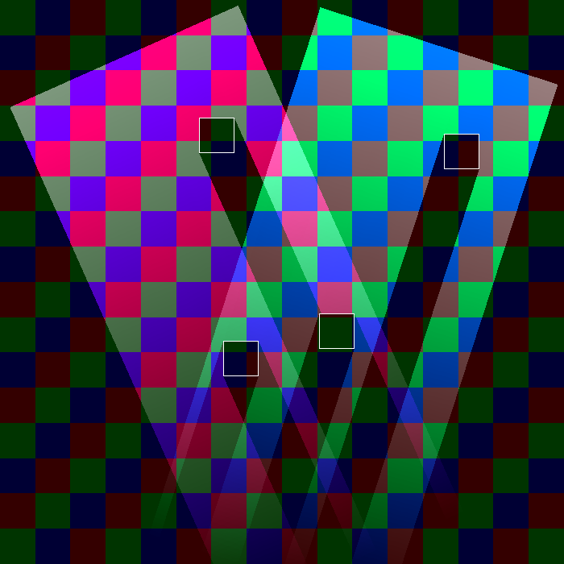
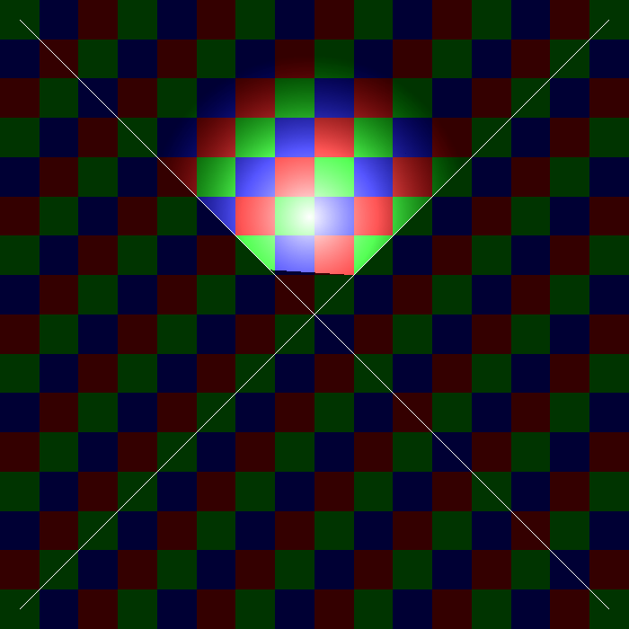
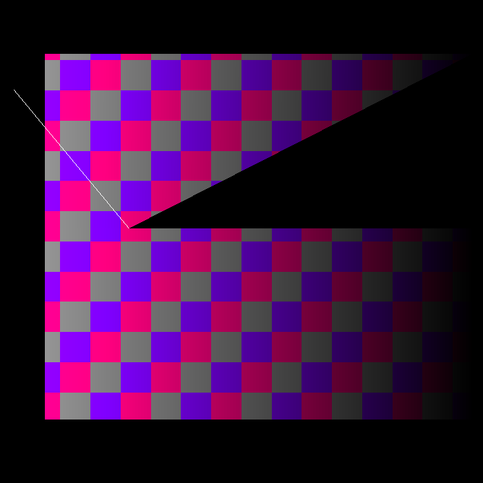

Table of Contents
Introduction
The two main objects related to shadow casting in Candle are light sources and edges.
For the lights, there is an abstract class called candle::LightSource, implemented by candle::RadialLight and candle::DirectedLight. They inherit from sf::Drawable and sf::Transformable, so they can be used as common SFML entities.
For the edges, there is a structure called candle::Edge, that can represent a segment by the coordinates of its ends. However, the raycasting function requires that the shadow casting edges are stored in a std::vector, so Candle provides a convenient alias for std::vector<candle::Edge> called candle::EdgeVector. This is what you should be using to manage your edges.
They interact through the function candle::LightSource::castLight, that takes two iterators from a candle::EdgeVector and use the edges contained between them to compute the area illuminated by the light source.
Let's see with a sample of code.
The previous code results in a light that follows the pointer and a vertical edge in the center of the screen.

Preview
Note how the castLight function is called only when the mouse is moved. Although it shouldn't be very expensive when a light has a normal amount of edges in range, it is preferable not to abuse it unnecesarily. Therefore, we will call it only when the light has been modified or the edges in range have moved.
Radial light and Directed light
In the previous example we have used a candle::RadialLight. This is the light type that casts rays in any direction from a single point. The other type is candle::DirectedLight, that casts rays in a single direction, from any point within a segment.
 Radial lights |  Directed lights |
Problems with intersections
Candle doesn't behave well when segments intersect. The reason is that lights project only to the end of segments, so intersection points, that are within the edge, are ignored.
|  First case: Intersection between edges: |  Second case: Intersection between an edge and the source of a directed light |
You should avoid this when placing the edges and lights in the scene.
Customizing the lights
There are four common parameters to customize light sources, and one parameter specific of each child class.
Common parameters
Intensity
Alpha component of the light, managed separately from the plain color.
Top left: hight intensity. Bottom right: low intensity.
Color
Plain color of the light.

Top left: Color cyan. Bottom right: Color yellow.
Range
Max range of the illuminated area.
Top left: Low range. Bottom right: High range.
Fade
Flag that indicates if the light fades towards the range limit.
Top left: Fade off. Bottom right: Fade on.
RadialLight parameters
Beam angle
Angle (in degrees) that limits the difference between the angles of the casted rays and the rotation of the light.
Top left: 90º. Top right: 180º. Bottom left: 270º. Bottom right: 360º.
DirectedLight parameters
Beam width
Maximum allowed distance from the center of the segment to a cast point.
Left: narrow beam. Right: wide beam.